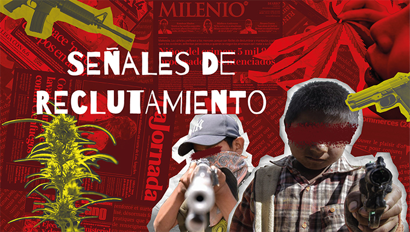

Es una videoinstalación de arte interactivo de tres canales que explora el fenómeno del reclutamiento infantil por parte del narcotráfico en México. Su objetivo es visibilizar las condiciones sociales, económicas y familiares que colocan a los niños en situaciones de vulnerabilidad, empujándolos a involucrarse en la delincuencia organizada.
A través de una serie de videos que el espectador activa mediante gestos con la mano, se revelan de forma simbólica las principales causas que enfrentan los infantes. La pieza no muestra violencia explícita, pero la hace presente mediante lo simbólico: el deterioro progresivo de los entornos, la repetición silenciosa y el vacío emocional. La obra transforma lo cotidiano en un espacio de alerta, donde la participación del público pone en marcha una narrativa crítica y profundamente humana.
